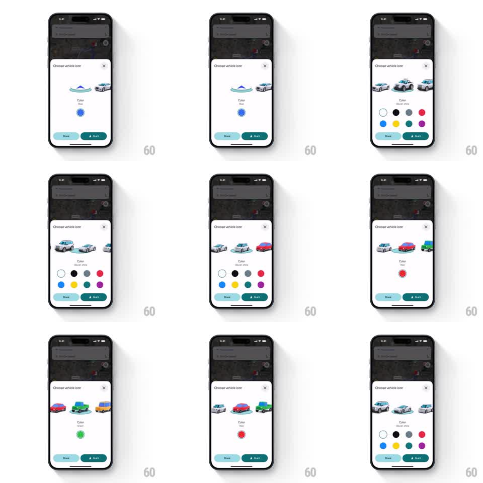

Media
Frame-by-frame

Rebuild this interaction 1:1: Google Maps' vehicle customization sheet - swipe through chunky 3D car models, pick one, then paint it with color swatches; the selected car scales up and recolors live.

Rebuild this interaction 1:1: Google Maps' vehicle customization sheet - swipe through chunky 3D car models, pick one, then paint it with color swatches; the selected car scales up and recolors live. ## Integration Integration: stack-agnostic spec - springs given as stiffness/damping, timed motions as duration + curve; map every value to your framework and animation library of choice. ## Scene A map dimmed under a bottom sheet titled "Choose vehicle icon" (close X). Inside: a horizontal car carousel (3 cars visible, center one larger on a soft shadow pad), a "Color" label with the current color name, a row of 8 circular color swatches, and "Done" + "Start" buttons at the bottom. ## Motion spec Pattern: carousel picker + live recolor, continuous. - Carousel swipe: cars translate 1:1 with the finger, the centered car scales up (0.8 -> 1) and rises onto its shadow pad while neighbors shrink and dim; release snaps the nearest car to center (spring ~350/22). - Swatch tap: selected swatch gets a ring highlight (scale 0.85 -> 1, 150ms) and the center car recolors with a quick color wipe across the body (200ms); the color name label crossfades to the new name (150ms). - Car swap animates the old car sliding out and the new one in on the carousel track (300ms, ease-out). - Sheet chrome, buttons, and map backdrop are static. ## Calibration - Only the centered car is full-opacity and full-size; partial focus on two cars at once reads as a broken snap. - Recolor affects the body paint only - windows, wheels, and shadows stay constant. ## Reduced motion Carousel snaps without momentum; recolor is an instant swap. ## Don't miss - The shadow pad belongs to the center slot, not the car - it stays put as cars pass through it. - Color swatches never move; selection is communicated by ring + car recolor, not swatch travel.